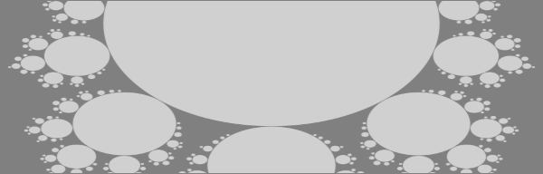

Fractarchy-CMS use instructions

T
hese pages are displayed with Fractarchy-CMS, and they contain Fractarchy-CMS use and site building
instructions. The current version of Fractarchy-CMS represents a
headless,
flat-file, and innovative content management system (CMS). CMS is a software application used to manage
the creation and modification of digital content. Supported content pages include static HTML, XHTML,
SVG, PNG, GIF, and JPG files (whatever can be loaded in a web browser).
When creating a Fractarchy-CMS based site, one should be sure to prepare for a "slack" experience. This means
one should possess a basic knowledge about editing xml files, html pages, and bitmap or vector graphics by
third-party tools. Moreover, one should be familiar with usage of local file system, managing a local web
server, and uploading files to a remote web server. Nevertheless, once one gets into the stunt, maintaining
sites should be an easy-peasy task.